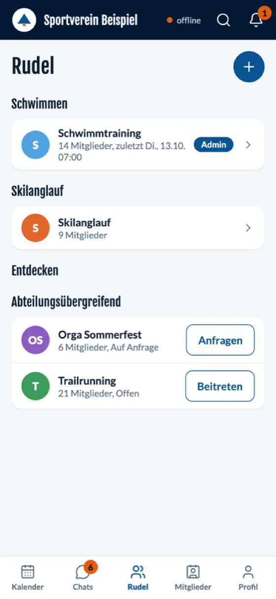
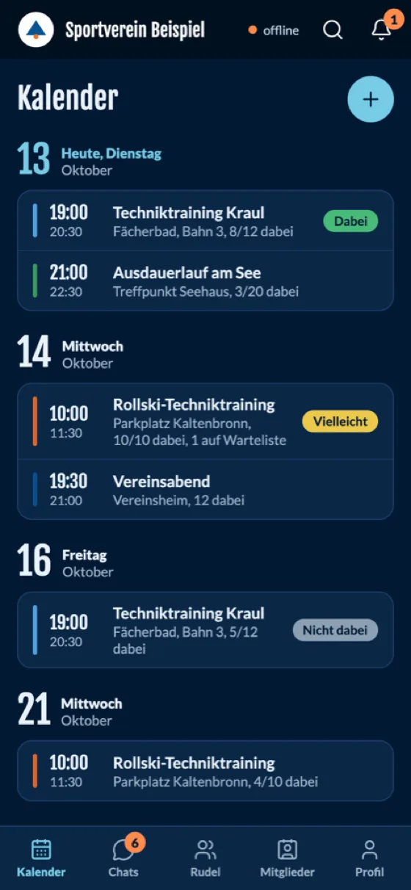
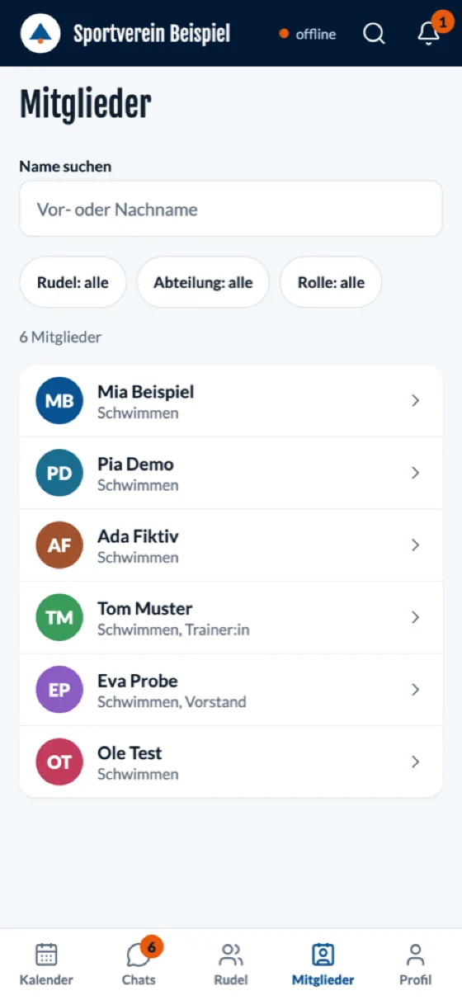

Termine und Serien
Einzeltermine und Wiederholungen. Mitglieder sagen mit einem Tipp zu, ab oder „vielleicht“. Ist ein Termin voll, rücken Wartelisten automatisch nach.
clubforge bringt Termine mit Zu- und Absagen, Gruppen, Chats und Benachrichtigungen in eine App für iPhone, Android und Browser. Sie funktioniert auch ohne Netz, und die Daten bleiben auf dem Server eures Vereins.


Einzeltermine und Wiederholungen. Mitglieder sagen mit einem Tipp zu, ab oder „vielleicht“. Ist ein Termin voll, rücken Wartelisten automatisch nach.
Abteilungen, Trainingsgruppen oder Orga-Teams: offen, auf Anfrage oder privat. Jede Gruppe hat eigene Termine, Mitglieder und Themen.
Direktnachrichten, Gruppen- und Terminchats mit Erwähnungen. Nachrichten können sich nach einer festgelegten Zeit selbst löschen.
Push, E-Mail und Glocke. Jede Person stellt selbst ein, was sie wann bekommt, inklusive Ruhezeiten und Erinnerungen vor Terminen.
Die App liest aus einer lokalen Datenbank und ist sofort da. Zusagen und Nachrichten warten ohne Netz und gehen automatisch raus, sobald es wieder Verbindung gibt.
Rechte werden in der Datenbank erzwungen, nicht nur in der Oberfläche. Profilfelder gibt jede Person einzeln frei. Keine Werbung, keine Tracker.
Dieselbe App läuft auf iPhone, Android und im Browser. Am Desktop wird aus der Tab-Leiste eine Seitenleiste, am Handy bleibt alles in Daumenreichweite. Hell und dunkel folgen dem System.




Browser-Ansicht in Handygröße mit Beispieldaten. Aufnahmen aus den nativen iOS- und Android-Apps folgen mit den Store-Versionen.
Wer in mehreren Vereinen aktiv ist, installiert die App einmal und wählt den Verein per Einladungslink oder Adresse. Name, Logo und Farben kommen vom Server des Vereins.
Es gibt keine zentrale Plattform, die eure Daten sammelt. Euer Verein entscheidet, wo der Server steht, wer Zugriff hat und wie lange Daten bleiben.
clubforge steht unter der GNU Affero General Public License (AGPL-3.0-or-later). Ihr dürft es nutzen, anpassen und weitergeben; Änderungen an gehosteten Versionen müssen offen bleiben.
Datenbank, Anmeldung, Sync und Suche laufen in euren Containern. Für Push-Mitteilungen werden nur die offiziellen Dienste der Gerätehersteller genutzt.
Zitadel stellt Login, Passwort-Zurücksetzen und Mehrfaktor bereit. Bestehende Identitätsdienste lassen sich anbinden.
Name, Logo, Farben und Begriffe („Gruppe“, „Rudel“, „Abteilung“) setzt ihr in der Konfiguration, ohne die App neu zu bauen.
Ein Linux-Server mit Docker, ein Hostname und ein TLS-Zertifikat genügen. Alles andere bringt das Compose-Projekt mit.
Eine Installation braucht etwas technisches Geschick; wer im Verein Server betreibt, schafft das in einem Abend. Anleitung und Konfiguration veröffentlichen wir zusammen mit dem Quellcode; das Repository wird mit dem Pilot geöffnet.
# Zugangsdaten und Konfiguration erzeugen deploy/gen-env.sh app.mein-verein.example # Stack starten docker compose -f deploy/compose.yaml up -d --build
clubforge ist in Entwicklung und läuft in einem Pilotverein. Die Grundfunktionen stehen, die Details ändern sich noch.